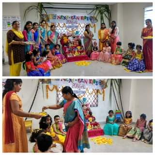

In Andhra Pradesh, Sankranti is celebrated with enthusiasm and various traditional customs.
In Andhra Pradesh, Sankranti is affectionately known as "Peddapandugi" because it brings a profound sense of financial prosperity to the community. The term encapsulates the joy and abundance felt by the people as they celebrate the successful sale of their paddy, signifying a prosperous agricultural season. Sankranti becomes a symbolic indication of good crop yield, and the festivities are infused with a unique blend of cultural traditions and economic gratification. The festival not only marks the culmination of their hard work but also reinforces the deep connection between agricultural success and the tangible benefits it brings to the lives of the residents in West Godavari, making Sankranti a truly significant and joyous occasion.
Actually this is celebrated for 4 days.
Bhogi
The first day is called Bhogi. On this day, people discard old and derelict things and concentrate on new things causing change or transformation. At dawn, people light a bonfire with logs of wood, other solid fuels and wooden furniture at home that are no longer useful. The disposal of derelict things is where all old habits, vices, attachment to relations and material things are sacrificed in the sacrificial fire of the knowledge of Rudra, known as the "Rudra Gita Gyana Yagya". It represents realization, transformation and purification of the soul by imbibing and inculcating divine virtues.
Bhohi Pallu
Bhogi Pallu is a unique tradition observed during the Sankranti festival in Andhra Pradesh. On the auspicious day of Bhogi, families come together as the eldest woman prepares Bhogi Pallu—a mix of fruits, sugarcane, coins, and treats. After seeking blessings, the Bhogi Pallu is joyously scattered over family members, symbolizing the dispelling of negativity and the welcoming of prosperity. This tradition holds communal significance, often celebrated collectively in neighborhoods. Alongside Bhogi Pallu, the lighting of bonfires called "Bhogi Mantalu" further marks the day, creating a vibrant and symbolic start to the Sankranti festivities in Andhra Pradesh.

Sankranti
On the main day of Sankranti, people wake up early, take a ritual bath, and offer prayers to the Sun God. They wear new clothes and engage in traditional activities to honor the transition of the sun into Capricorn.
Haridasu and Gangireddu Performances
In some regions, traditional performances like Haridasu (devotees of Lord Vishnu) and Gangireddu (bull) are common during Sankranti. Haridasus visit homes, sing devotional songs, and seek alms. Gangireddu, adorned bulls, are taken around for blessings, symbolizing fertility and prosperity.
Rangoli
Rangoli is a traditional art form that is popular during Sankranti. It is a colorful design made on the floor using colored rice flour, colored sand, or flower petals. Rangoli is believed to bring good luck and prosperity to the household.
Kite Festival
Kite flying is a popular tradition during Sankranti. People fly kites from their rooftops and compete with each other. The sky is filled with colorful kites of all shapes and sizes, making it a vibrant and joyous sight.
kodi Pandhalu
Bhimavaram, in the West Godavari district of Andhra Pradesh, is renowned for its vibrant Sankranti celebrations marked by the grand display of ornate arches known as "Kodi Pandals." These intricately designed arches, adorned with colorful decorations and diverse themes from mythology or cultural motifs, create a captivating spectacle. The competitive spirit among different neighborhoods and communities results in a visually stunning array of Kodi Pandals, contributing to the festive charm of the town. Illuminated in the evening, these arches not only symbolize the cultural richness of the region but have also become a major tourist attraction, drawing visitors to witness the creative and grandeur display during the auspicious Sankranti festival.
Cultural Events
Cultural Events: Communities organize cultural events, including traditional dances and music performances, showcasing the rich heritage of the region. These events bring people together to celebrate the cultural diversity of West Godavari.
Pindi Vantalu
Pindi Vantalu is a unique tradition observed during Sankranti in Andhra Pradesh. On the day of Sankranti, people prepare a special dish called Pindi Vantalu, made with rice flour, jaggery, and sesame seeds. The dish is offered to the Sun God and then shared with family and friends, symbolizing the spirit of sharing and community bonding. This tradition is a significant part of the Sankranti festivities in Andhra Pradesh, bringing people together to celebrate the joyous occasion.
Kanuma
The third day of Sankranti is called Kanuma. On this day, people worship cattle, especially cows, and bulls. They decorate and paint their horns, and feed them special food. In some regions, cockfights are also organized. Kanuma is a day to celebrate the relationship between farmers and their cattle, who are an integral part of their lives.